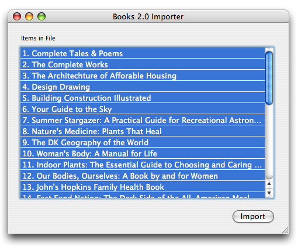

Have you used earlier versions of Books?
If you use previous versions (1.x, 2.x) of Books that predate the 3.x program, there are a things that you should be aware of.
We created Books 3 to address some of the architectural and interface limitations of Books 2. Books 2 provided a nice interface for managing small collections, but that interface did not scale well past several hundred books. Furthermore, the codebase made it difficult to add new functionality such as plugins and fast searching. Books 3 was created to address these problems.
Books 3 uses a number of Apple technologies introduced in MacOS X 10.4 "Tiger". Some of these technologies include Spotlight, CoreData, and WebKit. The upside of using these technologies is that Books 3 is much more stable and robust than any previous versions. The downside is that people who have not upgraded to MacOS X 10.4 will not be able to run Books. We believe that the improvements offered by MacOS X 10.4 are good enough that we have no problems recommending the upgrade.
To bring your Books 2 data into Books 3, you need to follow these steps:
1. Save your Books 2 data (a .books file) somewhere convenient. The Desktop works well for this.
2. Start Books 3 and go to the File→Import menu, and select Books 2.0 Importer.
3. Books will launch the plugin, which will ask you for your previous Books data. Point it to the .books file saved in step 1. The plugin will parse the file and list the books it found. By default, all of these are highlighted. Click Import to import the data into Books 3.

Books 2.0 Importer
Books 3 will create a new list with your older data. You may reorganize your collection as you see fit. Note that some cover images will appear very small in Books 3. You can fix this by deleting the cover image in the book information window and fetching a new version online or dragging in a high resolution scan.
Did You Know?
Books has gone through three major rewrites. Books 1 taught us how to program on the Mac, while Books 2 taught us how to create more complex applications. Thus far, Books 3 has been a lesson to us in creating better user interfaces and more scalable desktop applications.